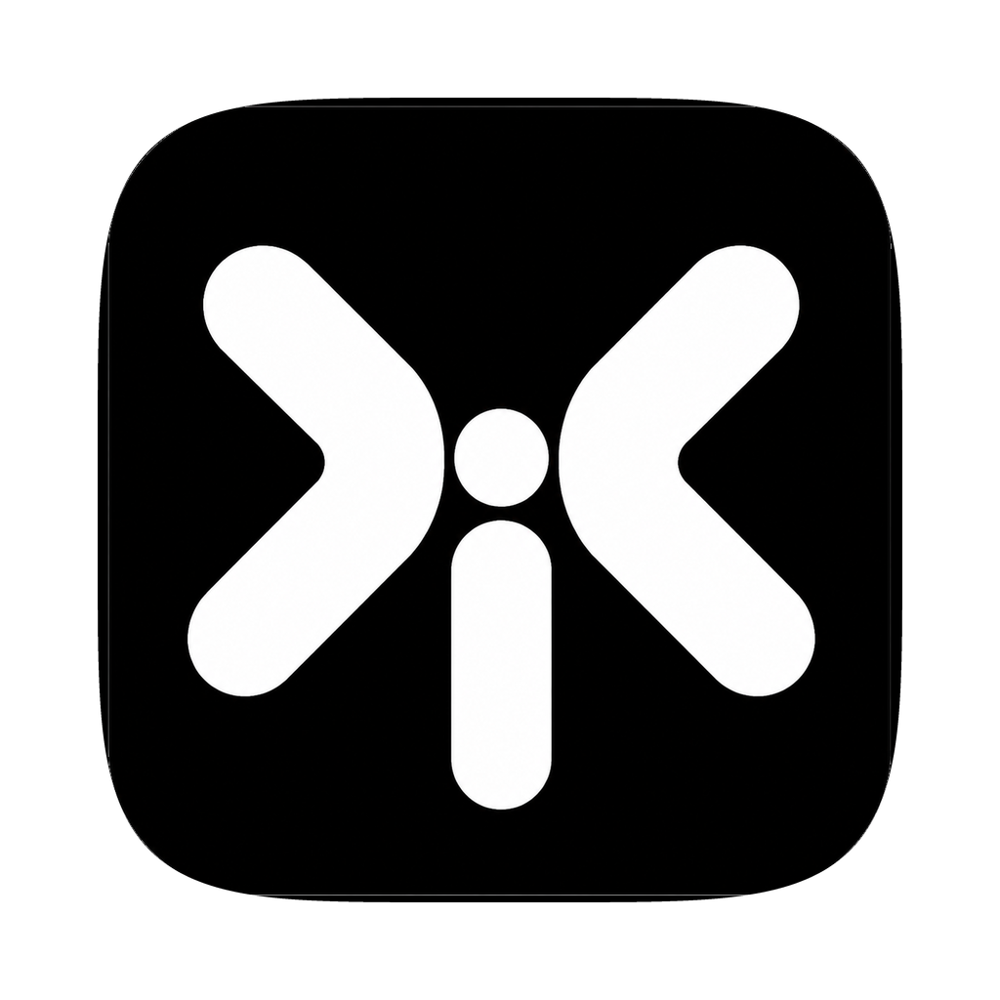

Live badges as your agents type
Every file an agent touches lights up the moment it hits disk. The whole tree reacts in real time, so you always know exactly what's being rewritten, and where.

teebeNative macOS · git worktree GUI
teebe is a native macOS git worktree GUI. Pick any worktree, including the ones Claude Code, Codex and Cursor create for each session, and watch the files inside it, live, as your agents edit them, with inline diffs right beside your terminal.
curl -fsSL https://teebe.io/install.sh | bash
Free · open source · macOS 14+ · Apple Silicon & Intel · auto-updates via Sparkle.
Terminal agents are the fastest way to ship with AI. They're also a black box: the agent
says "done", and you're left tabbing between git status and your editor to
find out what "done" actually means across five worktrees. teebe fixes exactly that, and
nothing else. Point it at your worktrees and each one gets a full file tree in a small
native window beside your terminal: browse what's actually inside every worktree, watch
files light up as agents edit them, and peek any diff with one keystroke. It doesn't run
your agents, doesn't touch your code, doesn't replace your tools. Keep your setup.
Space peek the diff · click a file to switch
Browse, watch, and diff every worktree, including the ones your agents create, without opening an IDE or leaving your flow.
Every file an agent touches lights up the moment it hits disk. The whole tree reacts in real time, so you always know exactly what's being rewritten, and where.
Select a changed file and hit Space for a side-by-side git diff, right there. Review what an agent actually did without opening an editor or switching apps.
Add all the repos and worktrees your agents run in and flip between them instantly. One calm window for the whole fleet.
The changes view shows ahead/behind counts per worktree, so you know what's merged, what's stale, and what needs a look.
A real Mac app in Swift, not an Electron wrapper. It reads git locally and your code never leaves your machine.
What teebe is, what it isn't, and how it fits beside your agents.
Because the terminal is great for running agents but poor at showing you files. When you have a window per project spread across your monitors, it gets messy to see which files an agent actually changed, and sometimes you need to look. teebe gives you that visual file tree and inline diffs beside your terminal, so you stay in the terminal-first flow you like and still see what changed.
Point teebe at a git worktree and it shows the full file tree with live badges. Every file an agent touches lights up the moment it changes on disk, and you can add multiple repos and worktrees side by side to keep an eye on several agents running in parallel at once. Click any file for an inline diff to see exactly what changed, without opening your editor. There's a walkthrough in see what Claude Code changed, live.
No to all three. teebe is the navigator, not the editor, the orchestrator, or the terminal. It browses, watches, and shows diffs, but never writes to your files and never runs your agents. You keep running agents in your terminal and writing code in your editor; teebe sits beside them and opens any file in the native editor you already use.
All of them, and yes. teebe works with Claude Code, Codex/CMAX, Cursor's CLI, and any terminal agent, because it just watches the filesystem and git rather than hooking into a specific tool. With no agents running it's still a fast, native git worktree browser: full tree, live updates, inline diffs, and a changes view with ahead/behind counts.
Orchestrators run and manage agents for you; git clients handle staging, commits, rebasing, and conflicts. teebe does neither. It's the passive watch layer beside them: a live file browser that shows what changed, with inline diffs and ahead/behind counts, so you can see what your agents did at a glance. Use it alongside an orchestrator or on its own.
Yes. teebe watches each repo's git metadata, so a worktree created by claude --worktree (under .claude/worktrees/), by the Codex app (under $CODEX_HOME/worktrees), by Cursor's parallel agents, or by a plain git worktree add shows up in the WORKTREES list the moment it exists, and disappears when it's removed. You can also add and remove worktrees from teebe itself. See Claude Code worktrees, explained and Codex worktrees.
No. teebe reads your files and git locally on your Mac. It doesn't upload your code, and there's no backend it talks to, so it works fully offline. The only thing that touches the network is the optional Sparkle auto-update check. See the privacy page.
Yes, both. teebe is free and open source, with no trial, no paid tier, and no account. The code lives on GitHub and installs come straight from GitHub Releases as a signed .app with auto-updates.
macOS 14 or newer, on Apple Silicon or Intel; teebe is a native Mac app, so it's Mac-only. To install, run curl -fsSL https://teebe.io/install.sh | bash in your terminal, or download the .dmg from GitHub Releases. It's a signed .app, so it opens without Gatekeeper warnings.
Native macOS git worktree GUI · free & open source · macOS 14+.
curl -fsSL https://teebe.io/install.sh | bash